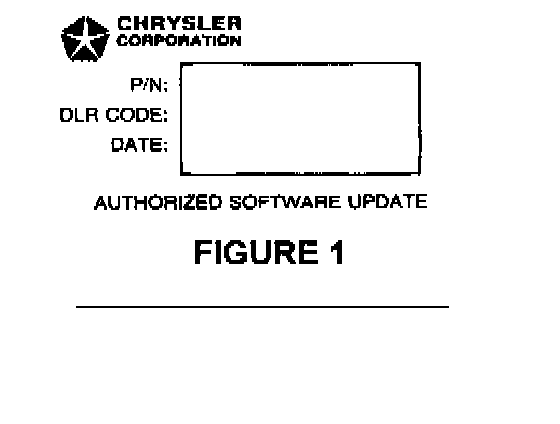
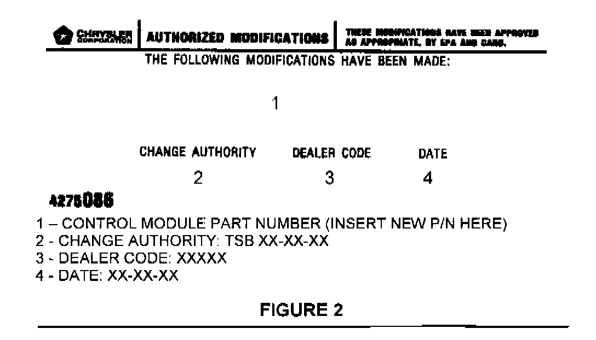

TCM - MIL ON/DTC P1763 Set
NUMBER: 21-04-00GROUP: Transmission
DATE: June 3O, 2000
THIS BULLETIN SUPERSEDES TECHNICAL SERVICE BULLETIN 18-07-99, DATED APRIL 30, 1999, WHICH SHOULD BE REMOVED FROM YOUR FILES. ALL REVISIONS ARE HIGHLIGHTED WITH **ASTERISKS** AND INCLUDE REVISED MODEL YEARS.
SUBJECT:
Erroneous MIL Illumination For P1763 - Trans. Governor Pressure Sensor Volts Too High
OVERVIEW:
This bulletin involves selectively erasing and reprogramming the JTEC Powertrain Control Module (PCM) with new software (calibration change 96Cal18, 97Cal18, 98Cal12, and 99Cal14).
MODELS:
**1996** - 1999 (AB) Ram Van
**1996** - 1999 (AN) Dakota
**1996** - 1999 (BR/BE) Ram Truck
1998 - 1999 (DN) Durango
**1997** - 1999 (TJ) Wrangler
**1996** 1999 (XJ) Cherokee
**1996** - 1998 (ZJ) Grand Cherokee
NOTE:
THIS INFORMATION APPLIES TO VEHICLES EQUIPPED WITH AN RE SERIES AUTOMATIC TRANSMISSION BUILT BEFORE DECEMBER 18, 1998 (MDH 1218XX).
SYMPTOM/CONDITION:
Some vehicles may exhibit a MIL illumination with a Diagnostic Trouble Code (DTC) of P1763 - Transmission Governor Pressure Sensor Volts Too High. The vehicle operator may experience slower than normal vehicle accelerations because the transmission may have temporarily entered its third gear "Limp-In" mode as a result of the DTC. The "Limp-In" mode may last until the vehicle owner cycles the ignition key. The technician may not detect a problem with the automatic transmission during a diagnostic test or test drive.
The MIL is caused by an increase in hydraulic pressure. The increased hydraulic pressure is the result of a new valve body machining process, which entered into production January 1, 1998. This condition will occur most often with vehicles that were built between January 1, 1998 and December 18, 1998.
Vehicles built prior to January 1,1998 may also experience this condition if the valve body or the transmission assembly is replaced with components built after January 1, 1998.
DIAGNOSIS:
Using the Mopar Diagnostic System (MDS2) and or the Diagnostic Scan Tool (DRB III(R)), with the appropriate Diagnostic Procedures Manual, verify that all engine and transmission systems are functioning as designed. If Diagnostic Trouble Codes (DTC's) are present, record them on the repair order and repair as necessary before proceeding further with this bulletin. If no DTC's are present, and the above symptom has been experienced, perform the Repair Procedure.
NOTE:
WHENEVER A POWERTRAIN (PCM) IS REPLACED DUE TO FAILURE, THE SOFTWARE OF THE REPLACEMENT CONTROLLER MUST BE VERIFIED FOR THE LATEST REVISION LEVEL. USE THE FLASH PROCEDURE TO UPDATE REPLACED CONTROLLERS AS NECESSARY.
PARTS REQUIRED:
1 04669020 Label, Authorized Software Update
1 04275086 Label, Authorized Modification
EQUIPMENT REQUIRED:
1 CH6000 Scan Tool (DRB III(R))
1 CH7035 General Purpose Interface Bus Cable (GPIB)
1 CH7000/7001 J1962 Cable
1 MDS2
NOTE:
THE MDS2 AND DRB III(R) ARE REQUIRED TO PERFORM PART OF THIS REPAIR. WHEN USING THE MDS2 AND THE DRB III(R), THE SYSTEM MUST BE OPERATING AT CIS CD 2061 OR HIGHER.
REPAIR PROCEDURE:
1. Log onto the MDS2 system.
2. Connect the MDS2 and DRB III(R) to the vehicle and switch the ignition key to "ON".
3. Use the arrow keys and select # 2 CONNECT TO MDS2 on the DRB III(R) MAIN MENU SCREEN.
4. Use the arrow keys and select # 2 RUN MDS2 APPLICATION on the DRB III(R) MAIN MENU SCREEN.
NOTE:
ONCE MDS2, DRB III(R), AND VEHICLE COMMUNICATION HAS BEEN ESTABLISHED, THE "CANNOT READ VIN FROM DRB III(R)" MESSAGE (ON THE MDS2) WILL BE REPLACED BY THE VEHICLE VIN. PRESS THE "OK" BUTTON ON THE MDS2 TO REQUEST A MDS2 SESSION FOR THE VEHICLE VIN INDICATED. PRESS THE "OK" BUTTON WHEN ASKED TO BEGIN SESSION.
5. Select the FLASH tab on the MDS2.
6. Select READ PART NUMBERS FROM VEHICLE and click SHOW UPDATES on the MDS2. Press the "OK" button.
NOTE:
IN ABOVE STEPS # 5 AND/OR # 6, A MESSAGE MAY APPEAR THAT INDICATES NO UPDATES ARE AVAILABLE. IF THIS OCCURS, MAKE SURE YOUR DIAGNOSTIC EQUIPMENT IS OPERATING AT THE LATEST SOFTWARE LEVEL AS LISTED EARLIER IN THIS BULLETIN. IF THE LATEST SOFTWARE IS INSTALLED, AND NO UPDATES ARE AVAILABLE, ANOTHER VEHICLE CONDITION EXISTS THAT WILL REQUIRE FURTHER INVESTIGATION.
7. Select the new software part number with the light pen and click UPDATE CONTROLLER SOFTWARE.
8. The MDS2 and DRB III(R) will prompt for any operator action needed during the remainder of the reprogramming process.
NOTE:
DUE TO THE PCM REPROGRAMMING PROCEDURE, A DTC MAY BE SET IN OTHER MODULES (EATX, BCM, MIC, SKIM) WITHIN THE VEHICLE, IF SO EQUIPPED. SOME DTC'S MAY CAUSE THE MIL TO ILLUMINATE. ALL DTC'S RELATE TO A LOSS OF COMMUNICATIONS WITH THE MODULE THAT IS BEING REPROGRAMMED. CHECK ALL MODULES, RECORD THE FAULTS, AND ERASE THESE FAULTS PRIOR TO RETURNING THE VEHICLE TO THE CUSTOMER. ERASE ANY FAULTS IN THE PCM ONLY AFTER ALL OTHER MODULES HAVE HAD THEIR FAULTS ERASED.
NOTE:
THE FOLLOWING STEPS ARE REQUIRED BY LAW.

9. Type the necessary information on the "Authorized Software Update Label" p/n 04669020 (Figure 1). Attach the label to the JTEC PCM and cover the label with the clear plastic overlay.

10. Type the necessary information on the "Authorized Modification Label" p/n 04275086 and attach the label near the VECI label (Figure 2).
POLICY: Reimbursable within the provisions of the warranty.
TIME ALLOWANCE:
Labor Operation No: 08-19-42-99 0.5 Hrs.
FAILURE CODE: FM - Flash Module